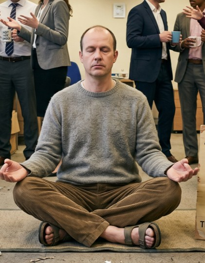
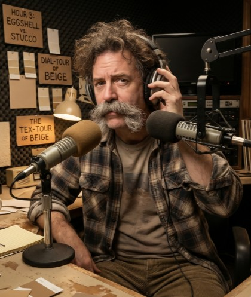
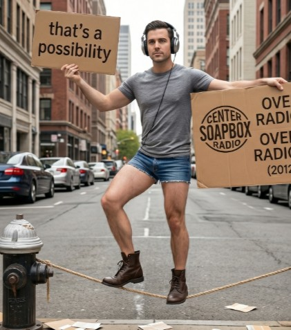
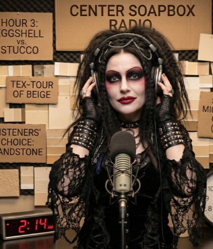
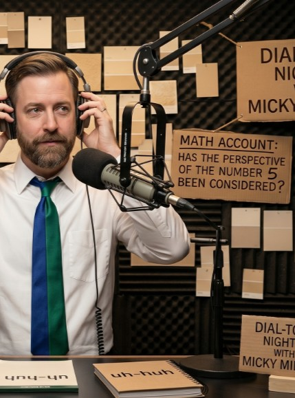

About
Welcome to Center Soapbox Radio, the only broadcast network dedicated to the exquisite art of taking no stance whatsoever. We exist for the truly "Undecided"—those brave souls who find the concept of a firm opinion to be entirely too adventurous. While others rush to take sides, we prefer to stand directly on the fence. In fact, we’ve found that the fence is the only place with a decent view of both sides’ spectacular failures. Our mission is simple: We refuse to be assertive about anything. At Center Soapbox, we don’t believe in "truth," "policy," or "solutions"—we believe in the infinite, comfortable space between two points. Whether we are questioning the logic of a decision or analyzing the absurdity of a counter-argument, we promise to never accidentally commit to a belief, creed, or point of view. If you are tired of being told what to think, or even how to think, join us on the soapbox. We’re not going anywhere, and we’re certainly not taking a stand.
Shows
The Fence-Sitter's Dilemma
Hosted by Arthur Neutral, this show spends 60 minutes analyzing both sides of a non-issue until the original topic is completely forgotten. Recent episodes include a deep dive into whether "Left" and "Right" are actually just different names for "Up" and "Down."
Equitable Yet Fair Observations
A show dedicated to measuring the exact mathematical distance between two political arguments. If someone says "the sky is blue," the host will bring on a guest to argue it’s actually "azure," then spend the rest of the hour apologizing to anyone who prefers "cyan."
The Soft-Pedal Hour
Our most popular show for those who find "assertiveness" offensive. The host speaks in exclusively passive-voiced sentences, ensuring that no subject, verb, or object is ever held accountable for anything. It is truly the sound of a shrug put to audio.
Neutrality at Noon
This show features a rotating panel of two guests who agree on absolutely nothing, moderated by a host who ensures that both guests are interrupted equally. If one guest makes a valid point, the host is contractually obligated to ask the other guest to "tell us about their childhood pet" to reset the tension.
Dial-Tone Nightly (DTN)
Our premier four-hour late-night call-in show. Listeners are invited to call in and share their absolute lack of conviction on current events. Host Bart Dell's primary job is to ensure that no caller ever finishes a sentence with a definitive statement. We guarantee that by the end of every call, both the host and the caller will have successfully navigated away from having any real point at all.
AM Ambiguity Amble
Airing at the crack of dawn, this show is for listeners who aren't quite ready to face the world's complexities. The host spends the hour reading cereal box ingredients and weather reports for cities that don't exist, all while carefully avoiding any topic that could be construed as "news." It is the sonic equivalent of lukewarm water..
Hosts
| Host Name | Show | Biography | Image |
|---|---|---|---|
| Arthur Neutral | The Fence-Sitter’s Dilemma | Arthur is a former professional professional-mediator who was fired for refusing to pick a side in a dispute over whether the office coffee was "too hot" or "not hot enough." He now views all of human discourse as a series of inconveniences that should be ignored until they go away. |  |
| Bart Dell | Dial-Tone Nightly (DTN) | A veteran of overnight radio, Bart famously spent a 4-hour broadcast in 2012 talking exclusively about the different textures of beige paint. He is the master of the "uh-huh" and the "that’s a possibility," ensuring that no listener ever feels pressured to agree with a single thing. |  |
| Sydnee "Sides" Vague | AM Ambiguity Amble | Sydnee is a human lullaby. Known for her ability to read a list of chemical preservatives in a soothing, hypnotic tone, she believes the key to a good morning is forgetting that the day is actually happening. She has never formed a firm opinion on weather, preferring to describe it as "ambient." | |
| Cyrus Equi | Equitable Yet Fair Observations | Cyrus holds a PhD in Abstract Balance. He carries a physical protractor with him at all times to ensure that his chair, his microphone, and his guest are positioned at exactly equal angles from the center of the room. He considers a "conclusion" to be a failure of imagination. |  |
| Patty Passive | The Soft-Pedal Hour | Patty’s voice has been described as "the sound of a cloud hitting a pillow." She avoids active verbs with a religious fervor, preferring to use phrases like "it is being suggested" or "some might have been thinking." She hasn't committed to a favorite food since 1998. |  |
| Micky Midline | Neutrality at Noon | Micky wears a tie that is divided into two distinct colors (and he changes the colors every day). He views arguments like a referee who is secretly rooting for a draw. He has a black belt in redirection; if a guest says "2+2=4," Micky will immediately ask if that math account has considered the perspective of the number 5. |  |